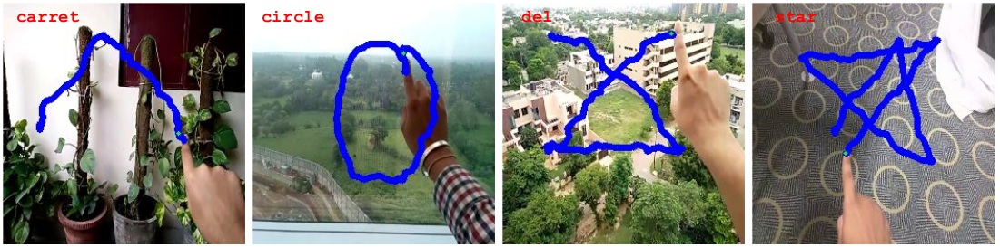
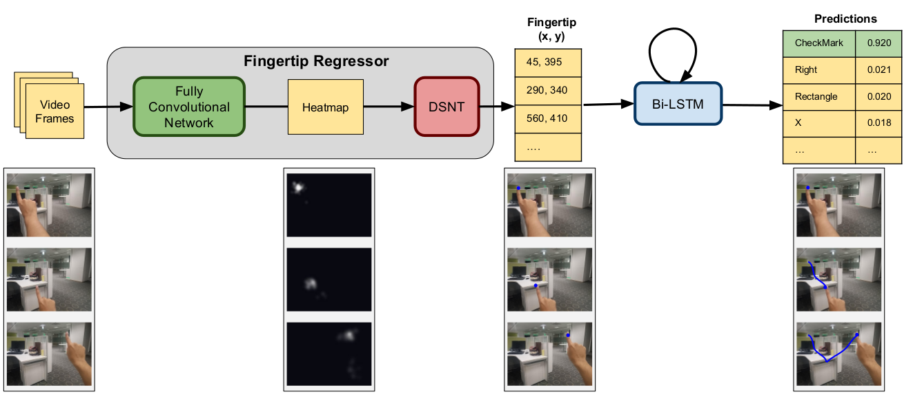
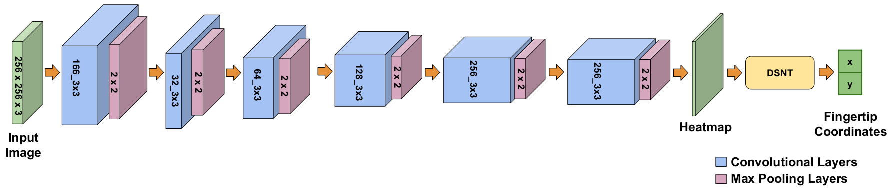
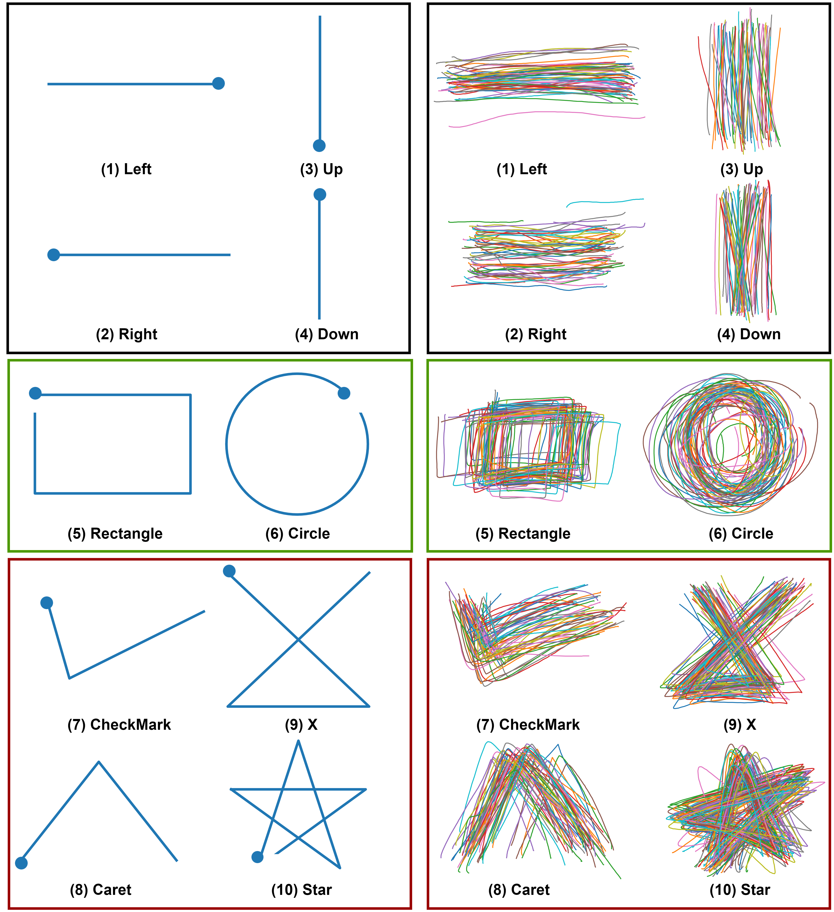
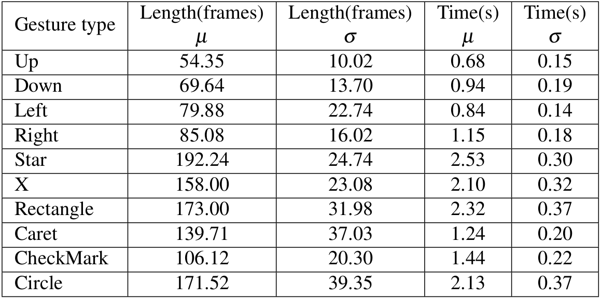

Abstract
Hand gestures form a natural way of interaction on Head-Mounted Devices (HMDs) and smartphones. HMDs such as HoloLens and ARCore/ARKit platform enabled smartphones are expensive and are equipped with powerful processors and sensors such as multiple cameras, depth and IR sensors to process hand gestures. To enable mass market reach via inexpensive Augmented Reality (AR) headsets without built-in depth or IR sensors, we propose a real-time, in-air gestural framework that works on monocular RGB input, termed, DrawInAir . DrawInAir uses fingertip for writing in air analogous to a pen on paper. The major challenge in training egocentric gesture recognition models is in obtaining sufficient labeled data for end-to-end learning. Thus, we design a cascade of networks, consisting of a CNN with differentiable spatial to numerical transform (DSNT) layer, for fingertip regression, followed by a Bidirectional Long Short-Term Memory (Bi-LSTM), for a real-time pointing hand gesture classification. We highlight how a model, that is separately trained to regress fingertip in conjunction with a classifier trained on limited classification data, would perform better over end-to-end models. We also propose a dataset of 10 egocentric pointing gestures designed for AR applications for testing our model. We show that the framework takes 1.73s to run end-to-end and has a low memory footprint of 14MB while achieving an accuracy of 88.0% on egocentric video dataset.

Key Contribution
- We propose DrawInAir , a neural network architecture, consisting of a base CNN and a DSNT network followed by a Bi-LSTM, for efficient classifiction of user gestures.
- DrawInAir works in real-time and can be ported on mobile devices due to low memory footprint.
- EgoGestAR: a dataset of 10 egocentric hand gestures suitable for AR applications.
The Idea

In this work, we present a neural network architecture comprising of a base CNN and a differentiable spatial to numerical transform (DSNT) layer followed by a Bidirectional Long Short-Term Memory(Bi-LSTM). The DSNT layer transforms the heatmap from CNN, that is rich in spatial information, to output spatial location of fingertip. The details of the CNN+DSNT network is mentioned in the figure below. The Bi-LSTM effectively captures the dynamic motion of user gesture that aids in classification.

Figure above shows the overview of our proposed fingertip regressor architecture for fingertip localization. The input to the network is 3x256x256 sized RGB images. The network consists of 6 convolutional blocks, each with different convolutional layers followed by a max-pooling layer. Then we have a convolutional layer to output a heatmap which is input to DSNT. Finally, we get 2 coordinates denoting fingertip spatial location.
EgoGestAR Dataset

We collected the data from 50 subjects in our research lab with ages in the range 21 to 50 with average age 27.8 years. The dataset consists of 2500 gesture patterns where each subject recorded 5 samples of each gesture. The gestures were recorded by mounting a 10.1 inch display HP Pro Tablet to a wall. The gesture pattern drawn by a user's index finger on a touch interface application with position sensing region was stored. The data was captured at a resolution of 640 x 480. Figure above describes the standard input sequences shown to the users before data collection and a sample subset of gestures from the dataset showing the variability introduced by the subjects. Statistics of the EgoGestAR dataset is shown below. The dataset is available here.
